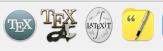
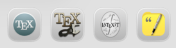
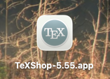
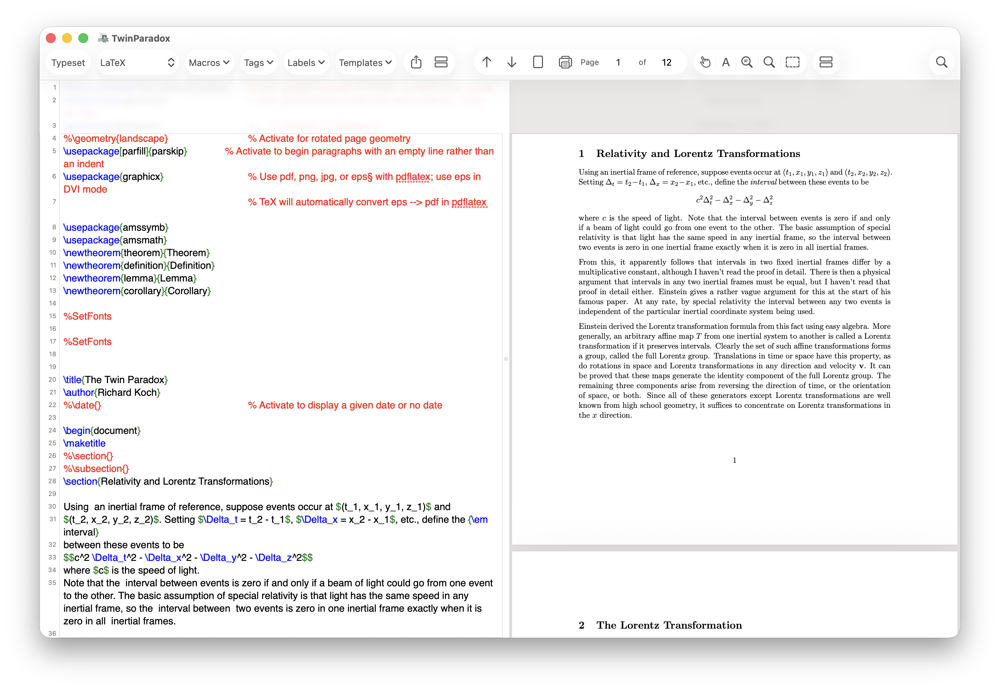

Updating to macOS 26.1
Apple released macOS 26.1 on November 2, 2025. It is very important that TeXShop users running macOS-26 (Tahoe) update to version 26.1 because it fixes a significant bug in earlier versions of Tahoe. If you are running the Tahoe version of TeXShop available below, the bug will be fixed as soon as you update to macOS-26.1; a new version of the TeXShop code is not required. We believe that all Tahoe bugs on TeXShop are fixed in macOS 26.1TeXShop Compiled on Sequoia vs TeXShop Compiled on Tahoe
The current release of TeXShop is version 5.57. It was compiled on Sequoia, but runs on all versions of macOS from High Sierra to Tahoe. For some time to come, TeXShop will be compiled and released this way.When version 5.57 runs on Tahoe, it does not have Liquid Glass features, but the lack of these features is hardly noticeable, and Tahoe itself and other Tahoe programs will have such features.
However, we provide a version of TeXShop below which does have Liquid Glass features and runs without problem on Tahoe. This version had a significant bug in earlier versions of macOS-26, but the bug was fixed in macOS-26.1 released on November 2, 2025.
Running Current TeXShop on macOS 26, Tahoe
The current version of TeXShop, version 5.57, runs fine on Tahoe. It does not use Liquid Glass. The only change when this version runs on Tahoe is its icon, which now lives in the "rectangular jail" provided by Tahoe for old icons that were not originally rectangular. The MacTeX install package and programs like TeX Live Utility, LaTeXiT, and BibDesk also work fine and reside in a similar jail. Below are their original icons as seen in Sequoia

and below are these icons in the Tahoe jail.


Upgrading TeXShop for Liquid Glass on Tahoe
It is easy to upgrade TeXShop so it uses Liquid Glass, and we provide an upgraded version of 5.57 at the bottom of this page. Apple created a new version of XCode for Tahoe, XCode 26. When the source code for TeXShop is compiled with XCode 26, Liquid Glass features are automatically added. The changes do not modify the TeXShop source code.
There was a bug in the original release of macOS-26 which broke one feature of TeXShop. This bug is fixed in macOS-26.1, released by Apple on November 2, 2026. We know of no other macOS-26.1 bugs when running TeXShop.
We'll explain the original bug for those who are curious. The bug only occurred in "Single Window mode", so if you always use multiple windows with TeXShop, you can relax. The bug was visible in the display shown below in single window mode. Notice that there was a blank area at the top of both sides, white on the left and gray on the right. Both areas were slightly transparent, and scrolling the source on the left or output on the right showed that both scrolled underneath the blank areas. If this single window was split back into separate windows, both inherited the blank areas. But to repeat, this bug is gone in macOS 26.1.

TeXShop Settings and Liquid Glass
There is one additional problem, but it only occurs if the Tahoe version of TeXShop is run on Sequoia or another earlier system.
The TeXShop Preferences dialog, called TeXShop Settings in recent times, is localized for 12 different languages and has a large number of connections from items in the dialog to pieces of source code. When Liquid Glass is applied to this dialog, several items move slightly, particularly in the Themes section with its large selection of color boxes. In the version of TeXShop for Liquid Glass available below, these settings items were moved back into place before compiling so they were aligned correctly; this was tedious because it had to be done for each localization. But eventually Settings looks fine in Liquid Glass.
But when the Tahoe version of TeXShop is opened in Sequoia and Liquid Glass is not available, the locations of items in Settings are no longer modified by Liquid Glass and look misaligned. The items still work in this case. Note that in the release version of TeXShop compiled on Sequoia, all items are correctly aligned on all systems including Tahoe.
The ultimate cause of the problem is that I incorrectly placed several items in Preferences years ago. To permanently fix this problem, I need to completely rewrite the Interface File for Preferences. The rewrite will be postponed for several months. Until the Settings dialog is fixed, we recommend using the Liquid Glass version of TeXShop on Tahoe and the current older version on Sequoia and below.
Obtaining TeXShop with Liquid Glass
The links in this section are still active, but obsolete. Instead see the links in the following section.
Here are links to the software on Tahoe:
- TeXShop Version 5.57 for Tahoe. Supports Liquid Glass for Intel and Arm.
- Source code. For Tahoe version.
We will maintain both a Sequoia version and a Tahoe version of TeXShop for the immediate future. When new features are added, we'll make them available in both versions simultaneously.
Warning: We do not expect to upgrade version 5.57 for several months. But when we do, "Check for updates" will provide the Sequoia version of TeXShop rather than the Tahoe version. The Tahoe version can only be obtained from this page, for now.
A Newer TeXShop 5.58 for Liquid Glass
On March 2, 2026, TeXLive-2026 and MacTeX-2026 were released by the TeX User Group. TeXShop users should certainly update to this latest version of MacTeX, which has important changes including notable advances for tagging pdf files. The link below takes you to the home page for this latest MacTeX distribution.
Among the items released is a special version of TeXShop, version 5.58, with support for Liquid Glass. This is the most recent version of TeXShop. While it will run on all recent versions of macOS, it is only recommended for users running macOS 26, Tahoe. See the link in the third paragraph of the MacTeX home page titled "GUI-Link" to get this version of TeXShop.
To go to the MacTeX home page: